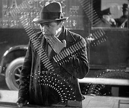

M, Still (Peter Lorre as Hans Beckert at a Shop Window)
Fritz Lang · 1931 · Film, black and white (frame)
In copyright. Look and learn: shown for study, not for download.
Fritz Lang shot M in six weeks in a Zeppelin hangar studio at Staaken, just outside Berlin; it was his first sound film. Peter Lorre, in his third screen role, acted in it by day and appeared on stage at night. Lorre could not whistle, so Lang dubbed Beckert's whistling himself. Lang used real criminals as extras, and 25 members of the cast were arrested during the shoot. The film premiered in Berlin on 11 May 1931.